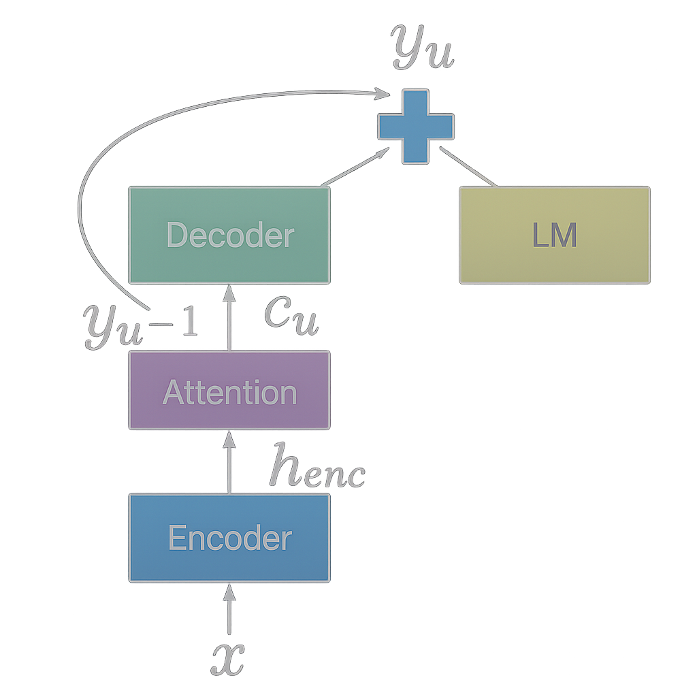

üîó Shallow Fusion: Bridging Data Scarcity and AI Integration Challenges
COLLINS WESTNEDGE
APRIL 16, 2025
Introduction
AI adoption and integration have become focal points in seemingly every earnings call, linkedin post, townhall and industry keynote. However, most of these conversations exist to highlight revenue potential, promote products and services, or bolster positive consumer sentiment, which is likely why they tend to gloss over or abstract away the technical challenges that stand in the way of effective adoption. One of the fundamental challenges is the gap between available data and the data needed for a domain-specific task.
Consider for example applying a large generalist model to a highly specialized task that barely surfaces in its pretraining data if at all. For the generalist model to succeed, it must first grasp dense company prospectuses, specialized jargon, and the nuances of the business problem itself. To address this gap companies often resort to standard recipes e.g. “exciting” the right activations through few-shot examples, dumping streams of internal documents into the model’s context, or ambitious attempts at fine-tuning on small internal datasets. However, with most of these approaches there’s often no optimization signal, or gradient to move against and progress if there’s any to be had involves a good deal of guesswork, trial, and error.
Automatic Speech Recognition (ASR) exemplifies this challenge. Many domains, such as medicine, law, financial services, etc contain specialized terminology that is typically outside the distribution or under-represented in the pretraining for general purpose models. A model trained on everyday speech will struggle with phrases like “orthostatic tachycardia” or specialized phonemes that are difficult to disambiguate, such as “ICU” vs “I see you”. Traditional solutions to this issue involve collecting domain-specific audio and ground truth transcriptions (often hand labeled) which can be cost prohibitive. Open source datasets on specialized domains are becoming more common but their volume and variety remain limited, keeping them tangential to many business use cases.
This distribution gap has motivated researchers and practitioners (myself included) to explore the concept of shallow fusion: combining general-purpose ASR models with domain-specific language models during inference. Rather than requiring extensive retraining, shallow fusion leverages existing domain expertise from an external language model at inference time. While the approach has shown promise in various implementations, the questions I would like to explore in this article are: Can a language model trained on domain-specific text meaningfully improve speech-to-text transcription quality within an adjacent domain? And critically, what are the failure modes associated with this type of integration?
Background & Existing Approaches (needs refinement)
The challenge of domain adaptation in ASR has prompted several approaches, each with distinct trade-offs in cost, performance, and implementation complexity. So before diving into my implementation, I’ll examine how the research community has approached this domain mismatch problem and where shallow fusion fits among existing solutions.
Traditional domain adaptation typically requires collecting domain-specific audio paired with ground truth transcriptions, then fine-tuning pretrained models on this data. While effective, this approach faces significant barriers: domain-specific audio is expensive to collect, transcription labeling is labor-intensive, and the resulting datasets often remain small and brittle compared to the large scale datasets that the base model was trained on. This approach also runs the risk of catastrophic forgetting1
Context injection methods attempt to bridge the gap by incorporating domain-specific text directly into the model’s context window, essentially “prompting” the ASR system with relevant terminology. However, these approaches offer no optimization signal and rely heavily on trial and error to achieve meaningful improvements. They are also architecture dependent and rely on the decoder’s prompting capacity.
Fusion techniques represent a middle ground, combining predictions from multiple models during inference rather than requiring extensive retraining. The research community has explored three primary variants:
- Cold fusion ???
- Deep fusion learns the combination weights
through additional neural network layers
- Shallow fusion combines model predictions through simple weighted averaging during inference
Shallow fusion’s appeal lies in its simplicity and flexibility, as it requires no additional training of the base ASR model. Instead, you incorporate predictions from an external language model directly at inference time, blending the acoustic model’s view of the audio with the language model’s understanding of domain-specific text. Importantly, the only data needed to build or adapt the external language model is unstructured text, which can be collected far more easily than transcribed audio and used in a self-supervised training setup.
However, the approach introduces its own challenges. If the language model is weighted too heavily, it may bias transcriptions toward plausible but incorrect tokens; too lightly, and the domain benefits are lost. Tuning the weighting factor for the external model often requires domain-specific adjustment. In addition, shallow fusion increases inference cost since predictions must run through a second model2. These trade-offs make it essential to understand the method’s failure modes before deploying it in practice.
Implementation: Medical Domain Fusion Pipeline
Having established the landscape of existing approaches, we can now detail the implementation of shallow fusion for medical ASR, combining Whisper with a domain-adapted GPT-2 model. However, before going into the specifics let us first build some intuition on the topic by analogy.
Consider for example, a person tasked with transcribing audio from a phone call between a customer and a claims representative at an insurance call center. This transcriber can hear the conversation clearly, but they have very little knowledge of the domain e.g. the technical issues, procedures, and medical terminology that often come up. Now imagine a second person who has worked in this industry for years and has deep familiarity with the jargon and context, but who is hard of hearing.
In practice, the first person might hear a phrase like “myocardial infarction” but misrecognize or misspell it. The domain expert, although unable to hear the audio, would immediately recognize the intended term and correct the transcript.
Shallow fusion can be thought of as a process of integrating each person’s expertise to offset the errors of one another and bridge modalities the other does not have access to. With this analogy we can now formally describe this process. In the example below think of \(P_{\text{ASR}}\) as the person listening to the audio and \(P_{\text{LM}}\) as the domain expert that is hard of hearing but deeply understands the context.
Mathematical Formulation
At each decoding step for some audio input, we select the most probable token \(y_{t}\) using information from the Automatic Speech Recognition model (ASR) and the Language Model (LM)
\[ y^* = \arg\max_{y_t}\; \left[ \log P_{\text{ASR}}\!\bigl(y_t \mid x,\, y_{\lt t}\bigr) \;+\; \lambda\,\log P_{\text{LM}}\!\bigl(y_t \mid y_{\lt t}\bigr) \right] \]
where:
- \(t\) is the decoding step
(0-based).
- \(y_t\) is the chosen token at
step \(t\) and \(y_{\lt t}\) are previously generated
tokens.
- \(x\) represents the acoustic
features (e.g. raw audio input).
- \(P_{\text{ASR}}\) depends on
both \(x\) and \(y_{\lt t}\), while \(P_{\text{LM}}\) depends on \(y_{\lt t}\) only.
- \(\lambda\) is the weighting
factor to determine the language model’s influence.
The idea is that the ASR model understands phonetics and language in a general sense while the LM model understands the specialized domain in its written form, but has no access to the audio signal. Just like in the analogy from earlier by fusing their predictions, we combine phonetic understanding with domain expertise, aiming to improve the quality of transcriptions for domain specific terms. Without careful integration or synergy between the two, both models can carry major limitations.
Process Diagram:
 Reference: Kannan et al. 2017
Consider an example where Whisper serves as our listening expert and GPT-2 as our domain-language expert. In practice these models share a tokenizer making the process of integrating their predictions fairly seamless at least for the english version of Whisper (Radford 2.2). Now let’s consider a claims call center transcript where an ASR model misinterprets a specialized medical term.
Input Audio (Ground Truth):
“The procedure was medically necessary for the treatment of
claimant’s Tetralogy of Fallot.”✔️
Whisper Initial Output:
“The procedure was medically necessary for the treatment of
claimant‚Äôs Tetralogy of below.‚Äùüö´
1. Whisper Initial Decoding:
Whisper produces logits at each step:
- Token: “The” → high confidence
- Token: “procedure” → high confidence
- Token: “claimant” → high confidence
- Token: “’s” → high confidence
- At the final subword, Whisper may exhibit uncertainty, spreading probabilities across candidates: “below”, “follow”, “Fallot”
2. Domain GPT-2 Predictions:
At this ambiguous decoding step, GPT-2 (the domain-adapted LM) produces logits based on the following context:
“The procedure was medically necessary for the treatment of claimant’s
_____”GPT-2 which has been fine tuned on medical literature strongly favors the correct token (produces log probabilities closer to 0 for Fallot) while Whisper, which had minimal access to medical terminology, assigns it a much lower likelihood (log probabilities that are more negative).
| Next Token | Whisper Log Probs | GPT-2 Log Probs |
|---|---|---|
| Fallot | –1.8 | –0.3 |
| below | –1.0 | –5.0 |
| follow | –3.5 | –3.8 |
3. Shallow Fusion (Combining Logits):
We combine each model’s logits using a weighted sum in the following way:
\[ \log P_{\text{combined}}\bigl(y_t\bigr) = \log P_{\text{Whisper}}\bigl(y_t \mid x,\, y_{<t}\bigr) + \lambda\,\log P_{\text{GPT2}}\bigl(y_t \mid y_{<t}\bigr) \]
| Next Token | Whisper Score | GPT-2 Score | Combined Score (λ = 0.2) |
|---|---|---|---|
| Fallot | –1.8 | –0.3 | –1.8 + 0.2 \(\times\) (–0.3) = –1.86 |
| below | –1.0 | –5.0 | –1.0 + 0.2 \(\times\) (–5.0) = –2.0 |
| follow | –3.5 | –3.8 | –3.5 + 0.2 \(\times\) (–3.8) = –4.26 |
Note: The numbers here are illustrative. In practice additional context and scaling would favor the correct token “Fallot”; additionally, rare words are likely split into multiple tokens but the intuition remains the same.
“Fallot” now has the highest combined score.
Final Corrected Output:
“The procedure was medically necessary for the treatment of
claimant’s Tetralogy of Fallot.”✔️
This demonstrates how domain-aware shallow fusion can significantly improve ASR output in specialized contexts.
Experimental Setup
[This section should detail your specific methodology including:] - Model selection and preparation (Whisper + GPT-2) - Training GPT-2 on PubMed dataset while preserving Whisper tokenizer compatibility - Fusion pipeline architecture and implementation details - Evaluation framework and metrics (WER, domain-specific accuracy, etc.) - Dataset preparation and testing procedures
Results & Analysis
[present findings such as:] - Overall WER performance comparison - Analysis of failure modes: early terminations, stylistic domain mismatches (punctuation, abbreviations like “centimeters → cm”) - Improvements in medical terminology recognition - Discussion of gating mechanisms and dynamic lambda approaches - Impact of various generation parameters - Various decoding approaches
Reflection and Future Directions
[section should discuss:] - Non-synthetic datasets mentioned in eval repo - Learnable or dynamic λ approaches - Mixture of Experts (MoE) architectures - Cold Fusion implementations - Deep Fusion alternatives - Broader implications for multimodal AI systems
Conclusion
[This section should:] - Articulate each model’s strengths and weaknesses, emphasizing how each model hits its own data wall separately: - Whisper (generalist): broadly trained acoustic-to-text model, struggles with specialized terminology - GPT-2 (specialist): trained in a self-supervised way solely on textual domain data, rich in domain-specific vocabulary but blind to acoustic signals - Summarize fusion-related setbacks/metrics as well as qualitative benefits - Connect this work to broader AI trends: Ensemble Architectures like Mixture of Experts, multimodal integration, domain adaptation, and evolution of fusion techniques (cold & deep)
Resources
- Shallow Fusion and Deep Fusion
- Deep
Shallow Fusion for RNN-T Personalization
- Analysis of
Incorporating an External Language Model…
- Robust Speech
Recognition via Large-Scale Weak Supervision
- On Using
Monolingual Corpora in Neural Machine Translation
- Language
Models are Unsupervised Multitask Learners
- Language Models are Few-Shot Learners
Catastrophic forgetting occurs when a neural network loses previously learned information upon learning new tasks or data.↩︎
Several variations exist to reduce the inference cost of shallow fusion, including N-best rescoring (applying the LM only to candidate transcripts), using smaller or distilled domain LMs etc.↩︎